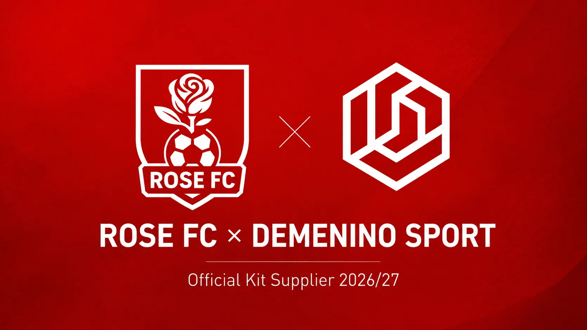
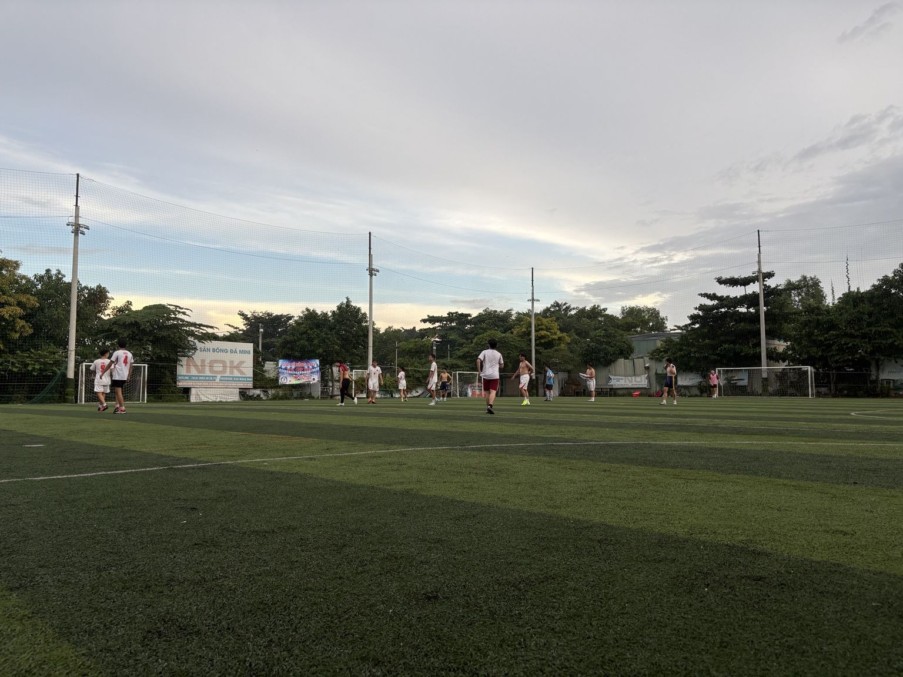
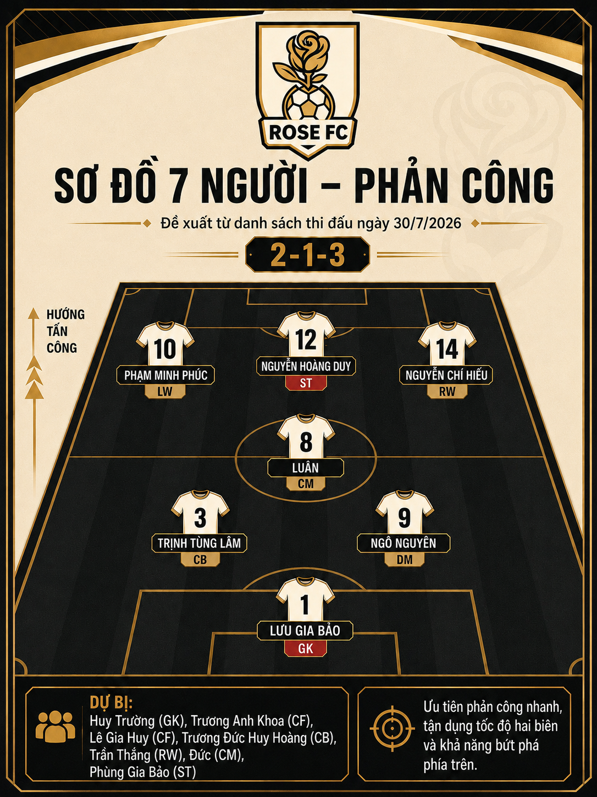

Demenino Sport trở thành đơn vị sản xuất áo đấu chính thức
Rose FC xác nhận đối tác trang phục thi đấu cho mùa giải 2026/27.
Chơi bằng đam mê. Gắn kết bằng trách nhiệm. Rose FC đang bước vào giai đoạn tái cấu trúc để trở thành một CLB bóng đá phong trào có tổ chức, có bản sắc và có định hướng phát triển dài hạn.
Poker trong chiến thắng 8–3, gồm một cú sút phạt và một pha bắt volley đáng chú ý.
Đọc Match Report
Rose FC xác nhận đối tác trang phục thi đấu cho mùa giải 2026/27.

Một màn lội ngược dòng mạnh mẽ và tám bàn thắng trong trận giao hữu tại sân NOK.

Tăng giao hữu, nâng cường độ và tạo bộ khung ổn định cho năm 2027.
Rose FC đặt mục tiêu tiếp cận và trở thành CLB thành viên VGF trong năm 2027. Lộ trình được chia thành ba giai đoạn: xây nền tảng, chuẩn hóa hoạt động và quyết định mức độ sẵn sàng.
Xem toàn bộ lộ trìnhMô phỏng bảng theo dõi tiến độ nội bộ trước giai đoạn đánh giá chính thức.
Nhân sự ổn định
Hình ảnh & Media
Chuyên môn sân 7
Quản trị CLB
Rose FC vẫn đang trong những ngày đầu của hành trình. Mỗi buổi tập, mỗi trận đấu và mỗi người ở lại đều đang góp một phần vào câu chuyện của CLB.
Không chỉ là nơi chúng ta chơi bóng. Đây là nơi chúng ta cùng nhau trưởng thành — bằng đam mê, trách nhiệm và niềm tin vào tập thể.